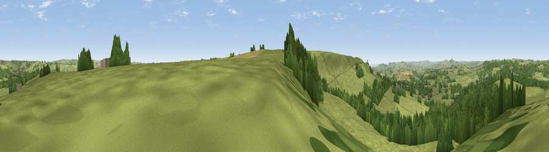

Viewpoint near Toller Porcorum
#14413 in England · top 34% of its area beats it · near Toller Porcorum · footpathWhere it is
The exact computed spot (SY 54675 95825). Click the marker for map links.
Public access: a public right of way passes within 24 m of this spot. Computed from Natural England's CRoW access layer and OpenStreetMap rights of way — not the legal definitive map. Always verify locally.
The view, rendered

A 360° render of this exact spot computed from the terrain model, tree cover and land cover — summer colours, afternoon light, calibrated against photographs of famous viewpoints. Real trees, hedges and buildings will differ in detail.
The panorama
Grey silhouette: terrain skyline in each direction (720 bearings, Earth curvature and refraction included). Dashed green: skyline with trees (+15 m) and buildings (+8 m) as obstacles. Blue strip: how far the ground is visible on each bearing.
Where the view opens
Wedge length = distance to the farthest visible ground on that bearing (vegetation-aware). Rings at 10, 25 and 50 km.
What fills the view
65% grassland · 32% woodland · 2% cropland
Angular shares of the visible panorama (visual magnitude), not map area. Landscape diversity 0.33 (0–1 Shannon).
Key numbers
More beautiful places nearby
The staircase of upgrades: each row has a higher view potential than everything closer. Driving times are estimates from straight-line distance, calibrated against real road routing — check an actual route before setting out.
| Place | Direction | Drive | Score |
|---|---|---|---|
| Viewpoint near Nettlecombe | SW · 1 km | ~3 min | 79.3 |
| Viewpoint near Askerswell | SSW · 1 km | ~4 min | 81.7 |
| Beacon Knap | SSW · 8 km | ~16 min | 84.8 |
| The Knoll | S · 8 km | ~16 min | 91.0 |
50.76024, -2.64398 · source: screening · position refined by local search. Computed location — check access rights before visiting.